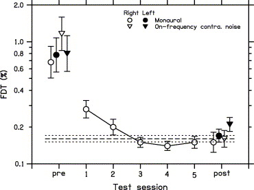
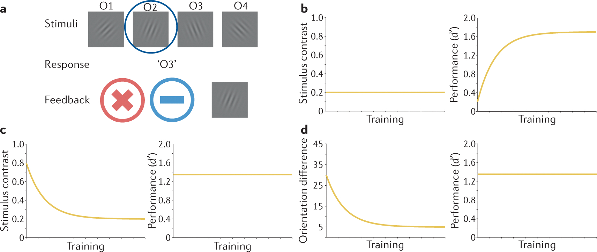
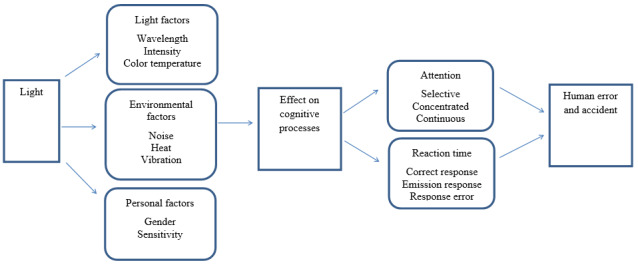
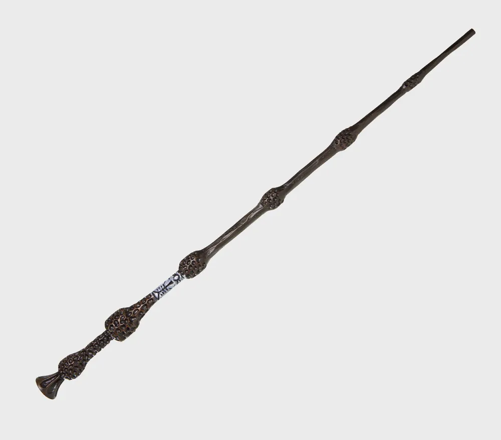

Subsequent Studies
Q. 현대 광학을 수강하고 나의 연구에 어떻게 적용할 수 있을까요?
저는 음악과 인지 과학에 관심이 많습니다.
수업 시간에 아주 다양한 광학적 현상을 다뤘지만,
그 중에서 사람이 빛을 어떻게 '인지'하는지에 대해, 저의 연구 분야와 관련하여 더 탐구하였습니다.
1. 신경 가소성과 청각적-시각적 인지 능력 향상에 대한 질문
예로, 음향 엔지니어들은 공연장에서 증폭되는 특정 주파수를 찾기 위해서 음감 훈련을 받는다. 즉, 음감을 후천적으로 발달시킬 수 있다. 나의 경험상, 음향 공부를 시작하기 전보다 노이즈나 악기를 듣는 능력이 많이 향상되었다. 실제로 'golden ear'라는 과목이 있다.
이는 auditory cortex, attention network, temporal processing가 훈련되기 때문이며, 단순히 귀가 좋아진다는 것을 의미하는 것이 아니고, 뇌가 중요한 주파수나 패턴을 분리하는 능력이 향상되는 원리이다.

(FDT: Frequency Discrimination Threshold)
관련 실험에서는, 음악가들은 비음악가보다 초기 음정(pitch) 구별 능력이 약 6배 뛰어났다. 그러나 비음악가도 약 4~8시간의 청각 훈련 후 음악가 수준에 가까운 성능 향상을 보였다. 이는 성인 이후에도 청각 지각 능력이 훈련으로 향상될 수 있음을 시사한다. [1]
유사하게, 시각적 인지 능력도 훈련을 통해서 발달할 수 있다. 이것은 청각에서 “악기 분리해서 듣기”와 비슷하다. 시각적으로 특정 spatial frequency와 위상 패턴에 대한 민감도가 증가할 수 있다. VPL(viwual perceptual learning)와 관련하여 시각적 인지 능력의 훈련과 발달에 대한 연구가 활발히 이루어지고 있다.

visual experience로 인해 visual task performance가 장기적으로 향상되는 현상으로, 반복적인 시각 훈련은 대비 감도(contrast sensitivity), 방향 구분(orientation discrimination), 운동 감지(motion detection), 질감 구분(texture discrimination), spatial frequency 감지감지 능력이 향상시킬 수 있다. 반복 훈련 후 시각 피질(V1 등), attention network, perceptual decision network의 연결과 가중치가 변화한다. 즉, 사람이 어떤 시각 패턴(Gabor patch)을 반복적으로 구분하도록 훈련받으면 시간이 지나며 더 미세한 차이도 감지하게 된다.
논문에서는 다양한 전문가들의 사례를 제시한다. 체스 고수는 말의 배치를 빠르게 인식하며, 기상 전문가는 위성 이미지 패턴을 빠르게 분류하고, 방사선 전문의는 미세한 영상 패턴을 감지할 수 있다. 지각 학습은 시각, 청각, 촉각, 후각, 미각, 그리고 복합 감각을 포함한 모든 감각에서 발생한다. [2]
그래서 당신은! 광학시간에 '나비 패턴'을 보려고 노력할수록 언젠간 해당 패턴을 인지할 수 있는 경지에 도달할 수 있다.
[1] Micheyl, C., Delhommeau, K., Perrot, X., & Oxenham, A. J. (2006). Influence of musical and psychoacoustical training on pitch discrimination. Hearing Research, 219(1–2), 36–47. https://doi.org/10.1016/j.heares.2006.05.004
[2] u, Z.-L., & Dosher, B. A. (2022). Current directions in visual perceptual learning. Nature Reviews Psychology, 1(11), 654–668. https://doi.org/10.1038/s44159-022-00107-2
2. 빛이 사람의 인지와 집중력에 미치는 영향
공연 중에 옆 사람의 휴대폰 빛 때문에 공연에 온전히 집중하지 못한 적이 있습니다.실제로 조명 감독님은 음악의 장르나 분위기에 따라 특정 '클리셰'를 사용하여 조명을 다루신다고 하셨습니다. 조명은 공연 몰입 경험에 중요한 역할을 합니다. 우리는 조명이 focus되는 곳에 집중하게 되며, 다른 빛에 의해 방해받을 수 있다는 것을 경험적으로 알고 있습니다.
빛은 인간의 집중력과 어떻게 관련이 있을까요?

적절한 조명은 시각적 주의(attention), 몰입, 반응 속도, 인지 수행을 향상시킬 수 있다. 조명이 attention과 reaction time에 영향을 주고, 밝기와 색온도가 집중력 및 작업 수행에 영향을 미친다. 또한, 부적절한 조명은 인지 효율을 저하시킬 수 있다. 특히, 파장이 짧고 강도가 높으며 Color temperature가 높은 빛은 멜라토닌 분비를 억제하고, 각성도를 높이며, 졸음을 줄이고, 주의력을 향상시키며, 반응 속도를 빠르게 하는 것으로 나타났다. 즉, 조명은 인간의 인지 과정(cognitive processes)에 영향을 주고, 집중력과 반응 속도에 영향을 미치며, 최종적으로 인간 오류(human error)와 사고(accident)에 영향을 준다. [3]
연극에서 동적 무대 조명이 관객 몰입에 미치는 심리적 효과에 대한 연구에서는, dynamic stage lighting은 관객 몰입(audience engagement)과 psychological response, attention direction에 영향을 준다. [4]
[3] Golmohammadi, R., Yousefi, H., Safarpour Khotbesara, N., Nasrolahi, A., & Kurd, N. (2021). Effects of light on attention and reaction time: A systematic review. Journal of Research in Health Sciences, 21(4), e00529. https://doi.org/10.34172/jrhs.2021.66
[4] Jain, D. (2026). Psychological effects of dynamic stage lighting on audience engagement in theatre. The Criterion: An International Journal in English, 17(2), 1007–1020. https://doi.org/10.66376/criterion.v17.n2.64
.
.
.
Modern Optics
오늘 등교하면서 '광학적 현상'을 인지하셨나요?
저는 2층에 사는데, 밤이 되면 밖이 잘 안보이지만 창문 너머 밖에서는 제가 (아주) 잘 보인다는 사실을 계속 알고 행동해야합니다.

광학 수업 덕분에 광학적 현상을 더 잘 인지할 수 있는 뇌로 성장한걸까요?